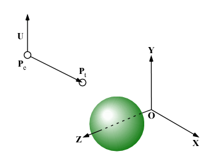

視点の位置を原点以外の任意の位置に移動できるように 課題０５で作成したプログラムを修正します．
視点の位置 Pe から，上方向のベクトルを U として，目標点の位置 Pt の方向を見たときの画像を生成してください．

目標点の位置 Pt および 上方向のベクトル U は，構造体 Camera の要素に t と u を追加し， この構造体の変数 camera のそれぞれの要素に格納するものとします．
struct Camera {
float p[3]; /* 視点の位置 Pe */
float t[3]; /* 目標点の位置 Pt */
float u[3]; /* 上方向のベクトル U */
float h; /* 視点とスクリーンの距離 h */
};
/*
** 視点のデータ
*/
struct Camera camera = {
{ -2.0, 3.0, 1.0 },
{ 0.0, 0.0, 10.0 },
{ 0.0, 1.0, 0.0 },
1.0,
};